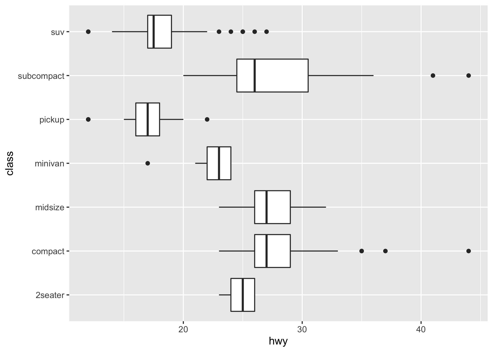
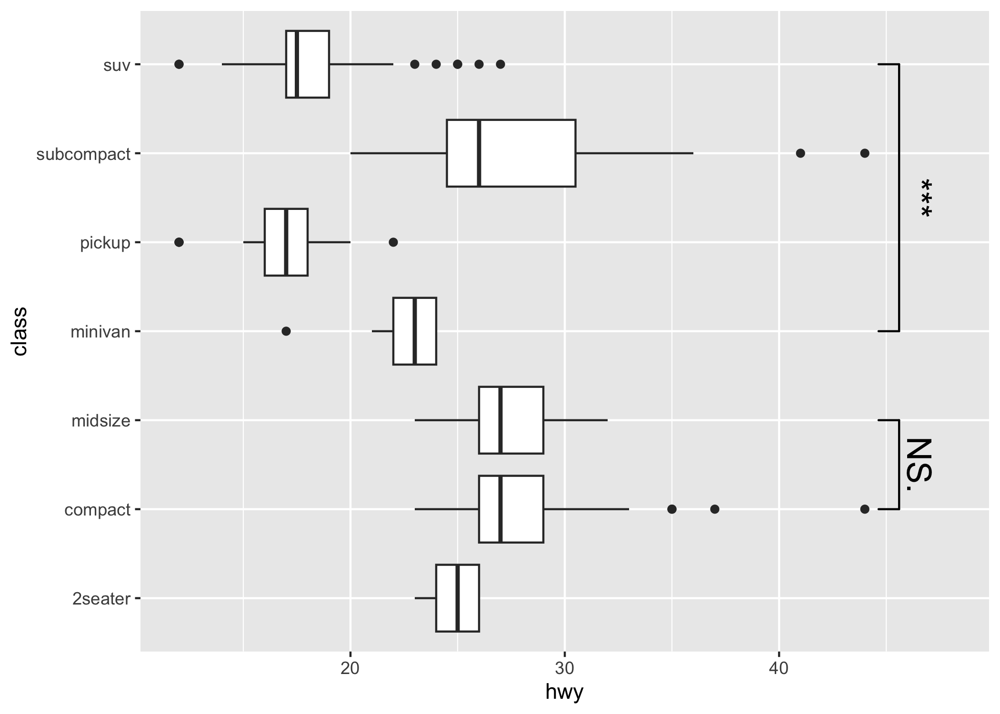

Introduction
This package provides an easy way to indicate if two groups are significantly different. Commonly this is shown by a bar on top connecting the groups of interest which itself is annotated with the level of significance (NS, *, **, ***). The package provides a single layer (geom_signif) that takes the groups for comparison and the test (t.test, wilcox etc.) and adds the annotation to the plot.
Citation
If you wish to cite this package in a publication, you can run the following command in your R console:
citation("ggsignif")
#> To cite 'ggsignif' in publications use:
#>
#> Ahlmann-Eltze, C., & Patil, I. (2021). ggsignif: R Package for
#> Displaying Significance Brackets for 'ggplot2'. PsyArxiv.
#> doi:10.31234/osf.io/7awm6
#>
#> A BibTeX entry for LaTeX users is
#>
#> @Article{,
#> title = {{ggsignif}: R Package for Displaying Significance Brackets for {'ggplot2'}},
#> author = {Ahlmann-Eltze Constantin and Indrajeet Patil},
#> year = {2021},
#> journal = {PsyArxiv},
#> url = {https://psyarxiv.com/7awm6},
#> doi = {10.31234/osf.io/7awm6},
#> }Example
You can first install this package from CRAN:
install.packages("ggsignif")Or get the latest development version:
install.packages("remotes")
remotes::install_github("const-ae/ggsignif")Plot significance
library(ggplot2)
library(ggsignif)
p1 <- ggplot(mpg, aes(class, hwy)) +
geom_boxplot() +
geom_signif(
comparisons = list(c("compact", "midsize"), c("minivan", "suv")),
map_signif_level = TRUE, textsize = 6
) +
ylim(NA, 48)
p1
Control the direction (either x or y) via orientation
p2 <- ggplot(
data = mpg,
mapping = aes(
x = hwy,
y = class
)
) +
geom_boxplot(
orientation = "y"
) +
geom_signif(
comparisons = list(
c("compact", "midsize"),
c("minivan", "suv")
),
map_signif_level = TRUE,
textsize = 6,
margin_top = 0.08,
step_increase = 0.05,
tip_length = 0.01,
orientation = "y"
)
p2
Compatible with coord_flip
p1 + coord_flip()
Setting the precise location
This is important if you use position="dodge", because in that case I cannot calculate the correct position of the bars automatically.
# Calculate annotation
anno <- t.test(
iris[iris$Petal.Width > 1 & iris$Species == "versicolor", "Sepal.Width"],
iris[iris$Species == "virginica", "Sepal.Width"]
)$p.value
# Make plot with custom x and y position of the bracket
ggplot(iris, aes(x = Species, y = Sepal.Width, fill = Petal.Width > 1)) +
geom_boxplot(position = "dodge") +
geom_signif(
annotation = formatC(anno, digits = 1),
y_position = 4.05, xmin = 2.2, xmax = 3,
tip_length = c(0.2, 0.04)
)
ggsignif is compatible with facetting (facet_wrap or facet_grid). The significance label is calculated for each facet where the axis labels listed in comparisons occur. Note that ggsignif fails to calculate the significance if the data is grouped globally (e.g., by setting color, fill, or group in ggplot(aes(...))). It is fine to group the data per geom (e.g., set the fill within geom_boxplot(aes(fill = ...))).
ggplot(diamonds, aes(x = cut, y = carat)) +
geom_boxplot(aes(fill = color)) +
geom_signif(comparisons = list(c("Fair", "Good"),
c("Very Good", "Ideal"))) +
facet_wrap(~color) +
ylim(NA, 6.3)
Advanced Example
Sometimes one needs to have a very fine tuned ability to set the location of the the significance bars in combination with facet_wrap or facet_grid. In those cases it you can set the flag manual=TRUE and provide the annotations as a data.frame:
annotation_df <- data.frame(
color = c("E", "H"),
start = c("Good", "Fair"),
end = c("Very Good", "Good"),
y = c(3.6, 4.7),
label = c("Comp. 1", "Comp. 2")
)
annotation_df
#> color start end y label
#> 1 E Good Very Good 3.6 Comp. 1
#> 2 H Fair Good 4.7 Comp. 2
ggplot(diamonds, aes(x = cut, y = carat)) +
geom_boxplot() +
geom_signif(
data = annotation_df,
aes(xmin = start, xmax = end, annotations = label, y_position = y),
textsize = 3, vjust = -0.2,
manual = TRUE
) +
facet_wrap(~color) +
ylim(NA, 5.3)
You can ignore the warning about the missing aesthetics.
For further details, see: https://const-ae.github.io/ggsignif/articles/intro.html
Maintenance
This package is provided as is and we currently don’t have any plans and the capacity to add any new features to it. If there is nonetheless a feature which you would like to see in the package, you are always welcome to submit pull request, which we will try to address as soon as possible.
Code of Conduct
Please note that the ggsignif project is released with a Contributor Code of Conduct. By contributing to this project, you agree to abide by its terms.